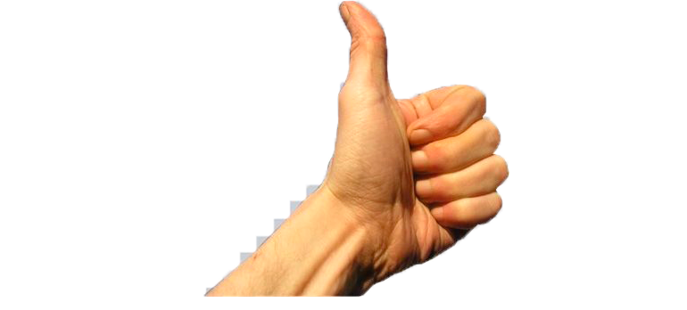

Um baby qualquer da net.
<
>
≤
≥
£
¥
€
©
®
™
‰
∑
∞
×
±
⊕
√
⦤
δ
λ
ω
φ
←
→
↑
↓
↔
♠
♣
♥
♦
Um jovem sonhador de Matias Barbosa

...de oliveira quatro
Não me envolvo em polêmica
Texto é um conjunto de palavras e frases encadeadas que permitem interpretação e transmitem uma
mensagem. É qualquer obra escrita em versão original e que constitui um livro ou um documento escrito.
Um texto é uma unidade linguística de extensão superior à frase.
Em artes gráficas, o texto é a matéria escrita, por oposição a toda a parte iconográfica (ilustrações e
outros elementos). É a parte principal do livro, revista ou periódico, constituída por composição
maciça, desprovida de títulos, subtítulos, epígrafes, fórmulas, tabelas, etc.
Um texto pode ser codificado, sendo formado de acordo com um código determinado impeditivo da sua
leitura direta.
Um texto tem tamanho variável e deve ser escrito com coesão e coerência. Pode ser classificado como
literário e não-